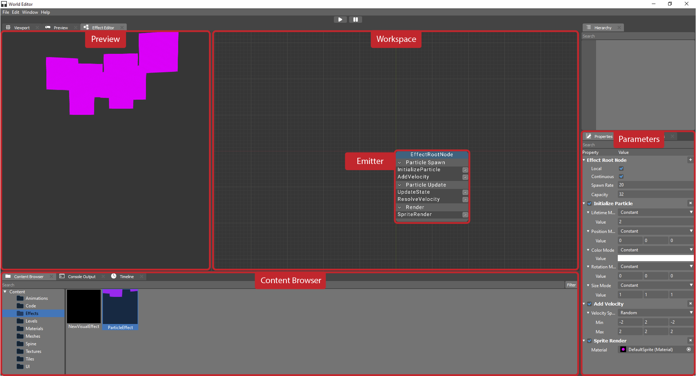
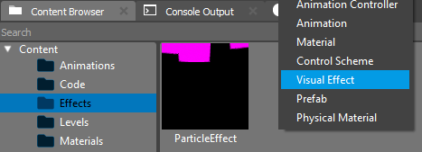
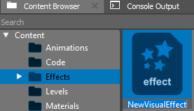
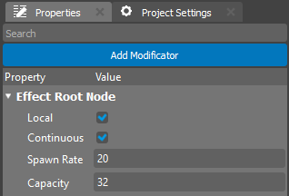
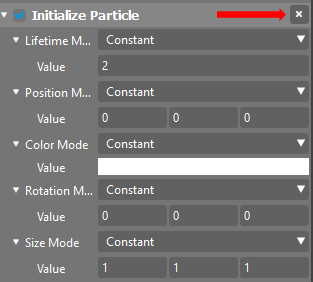

Редактор VFX¶
Введение¶
Редактор VFX — это инструмент, предназначенный для создания и редактирования визуальных эффектов (VFX) в игровом движке. С помощью этого редактора вы можете создавать эффекты частиц, освещение, тени, анимации и другие графические элементы, которые улучшают визуальное восприятие игры.
Эта документация предназначена для пользователей, которые хотят научиться использовать редактор VFX для создания, настройки и оптимизации визуальных эффектов в своих играх.
Начало работы с редактором VFX¶


Редактор состоит из нескольких ключевых областей:
Рабочая область: Область, где визуализируются и редактируются VFX, позволяющая настраивать эффект и просматривать его в реальном времени.
Редактор параметров: Панель, расположенная рядом с рабочей областью, где вы можете настраивать параметры каждого модификатора частиц. Здесь вы можете настраивать такие свойства, как эмиссия частиц, траектория, размер, скорость и время жизни.
Окно предпросмотра: Область, где вы можете просматривать эффект в реальном времени. Окно предпросмотра обновляется по мере изменения параметров, позволяя вам сразу видеть результаты.
В редакторе эффекты представлены в виде каскада модификаторов частиц, которые позволяют точно настраивать каждый аспект эффекта.
Создание нового эффекта¶
Перейдите в Обозреватель контента.
Щёлкните правой кнопкой мыши и выберите Визуальный эффект из контекстного меню.

Подтвердите создание. Новый эффект появится в Обозревателе контента и будет доступен для дальнейшего редактирования.

Каскад модификаторов частиц¶
Эффект состоит из серии модификаторов, которые управляют различными аспектами поведения частиц. Каскад модификаторов позволяет настраивать:
Эмиссия частиц: Установите количество и частоту генерации частиц.
Траектория движения: Определите направление и скорость движения частиц.
Время жизни частиц: Укажите, как долго существует каждая частица.
Размер и текстуры частиц: Настройте внешний вид, включая текстуры, прозрачность и другие визуальные свойства.
Каждый модификатор можно настроить с помощью параметров, доступных в Редакторе параметров.
Каскад модификаторов частиц¶
Эффект состоит из серии модификаторов, которые управляют различными аспектами поведения частиц. Эти модификаторы можно разделить на три типа:
Spawn — модификатор, применяемый при создании новой частицы:
Эти модификаторы определяют начальные свойства частицы, такие как её положение, скорость и другие стартовые атрибуты при порождении частицы.
Update — модификатор, применяемый для обновления состояния частицы каждый кадр:
Эти модификаторы отвечают за изменение состояния частицы со временем, влияя на её движение, размер, цвет и другие динамические свойства в течение её жизни.
Render — модификатор, отвечающий за рендеринг частицы:
Эти модификаторы управляют тем, как частица рисуется или рендерится, включая её внешний вид, текстуру и любые другие визуальные характеристики, которые применяются при её отображении.
Каждый модификатор можно настроить с помощью параметров, доступных в Редакторе параметров.
Добавление модификаторов в каскад¶
Модификаторы в каскаде управляют различными аспектами поведения частиц и их взаимодействием с окружением. Правильная настройка модификаторов необходима для достижения желаемого визуального эффекта.
Добавление модификатора Чтобы добавить новый модификатор, нажмите кнопку Add Modificator в Свойствах и выберите один из доступных типов модификаторов

Некоторые из доступных модификаторов:
Add Velocity – для изменения скорости частиц.
Rotation Rate – для управления углом поворота частиц.
Color Scale – для плавного изменения цвета частиц от рождения до гибели.
Size Scale – для изменения размера частиц со временем.
Настройка параметров модификатора После добавления модификатора вы можете настроить его параметры в Редакторе параметров. В зависимости от типа модификатора будут доступны разные настройки. Например: - Для модификатора Velocity вы можете установить скорость и направление.
Для Color Scale вы можете выбрать начальный и конечный цвета частиц, а также продолжительность изменения цвета.
Предпросмотр изменений После добавления и настройки модификаторов вы можете сразу увидеть результат в окне Предпросмотра. Это поможет вам оценить влияние каждого изменения в реальном времени и точно настроить параметры для достижения желаемого результата.
Удаление модификатора Чтобы удалить модификатор, нажмите кнопку «X» в окне Свойства. Удаление модификатора не повлияет на другие элементы эффекта.

Следуя этим шагам, вы сможете эффективно добавлять и настраивать модификаторы в каскаде для создания сложных и реалистичных визуальных эффектов.